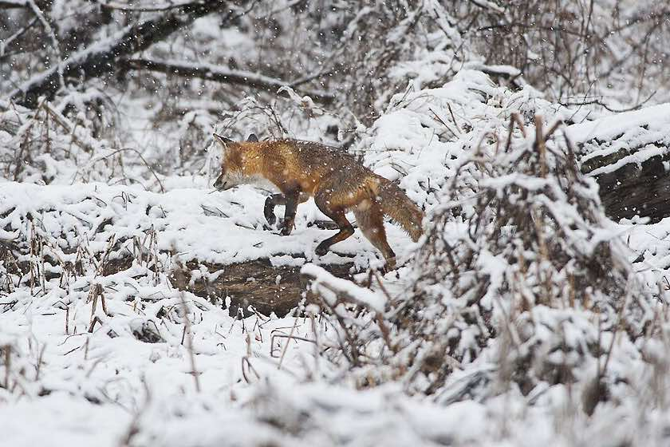
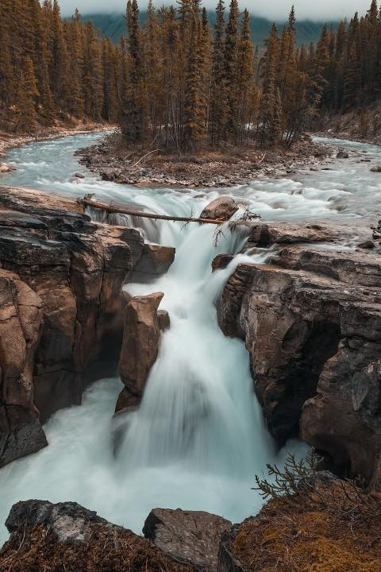
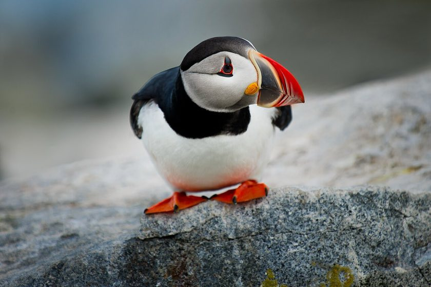
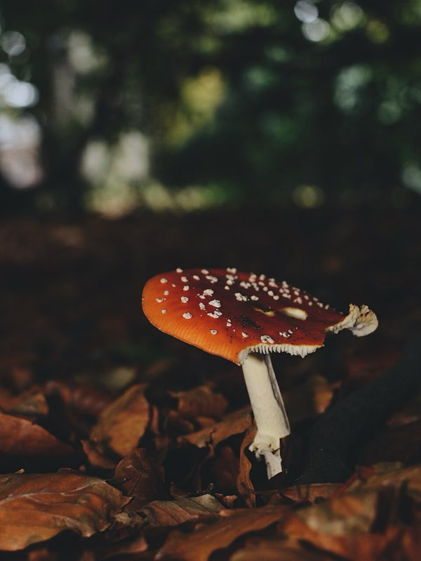
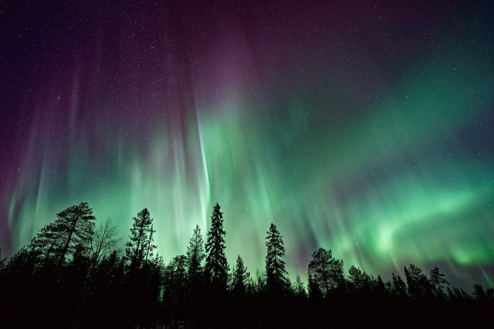
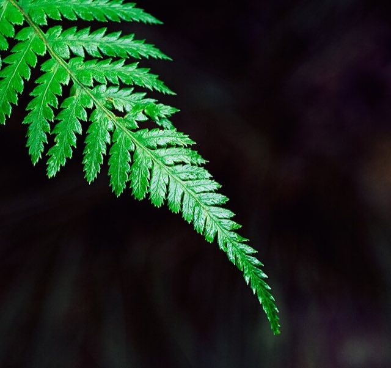

Wild places, quiet moments
Foxes in the snow, puffins on the rocks, green lights in the night sky. Click a photo to see it big.


"Be quiet, be patient, and the forest comes to you."
Ada Fernwood




Photo tip
Get down low. Animals look best from their own eye level. More tips